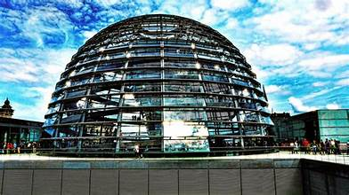
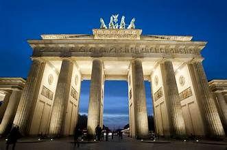
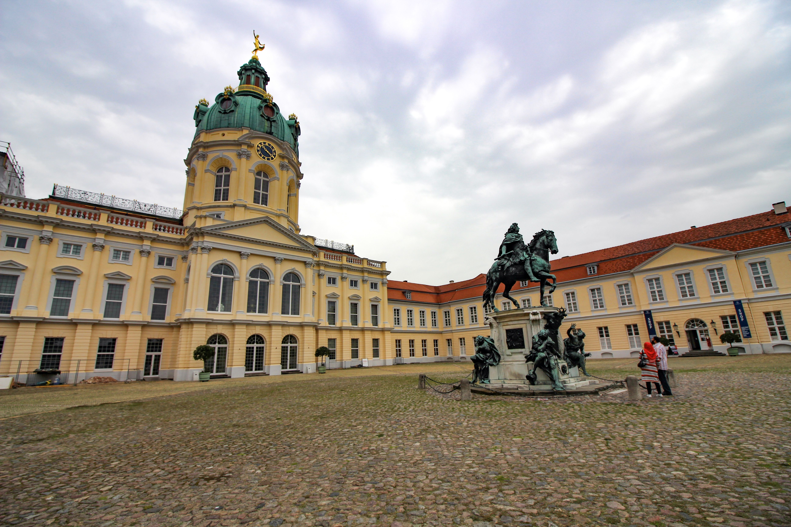
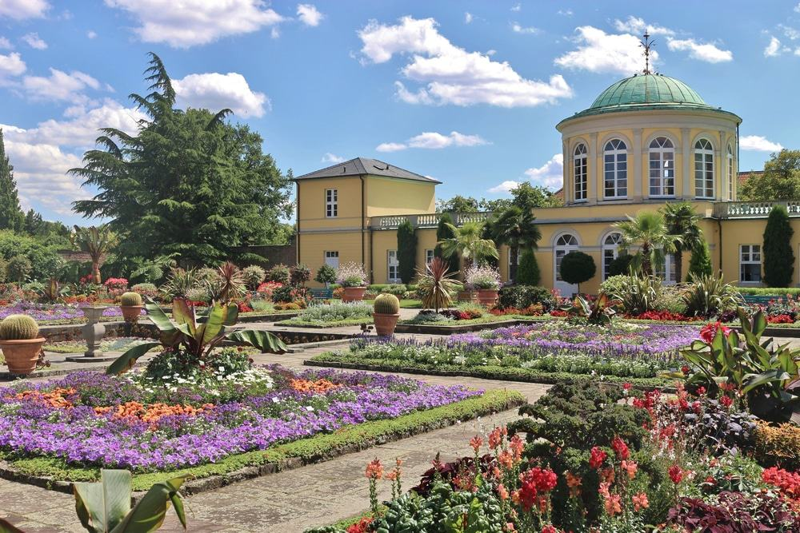
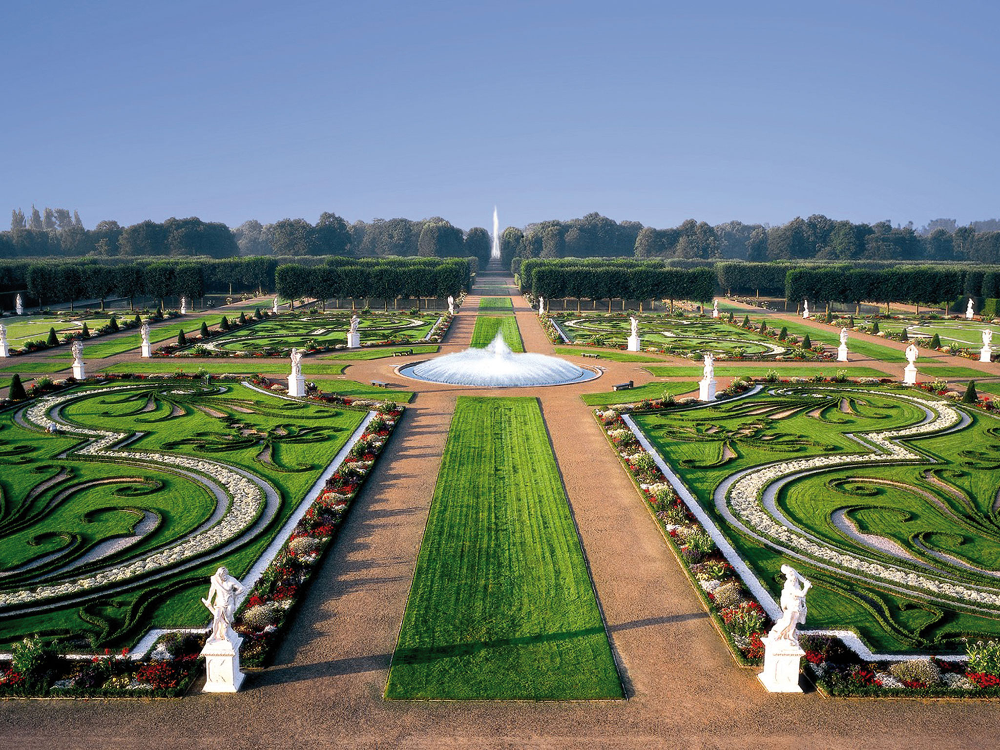
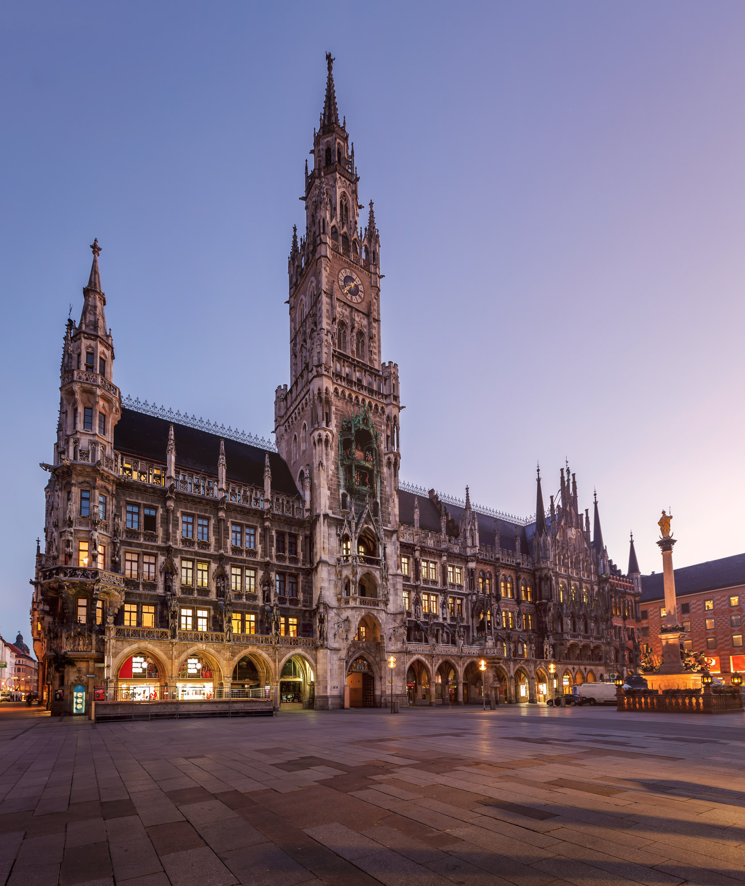
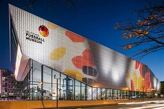
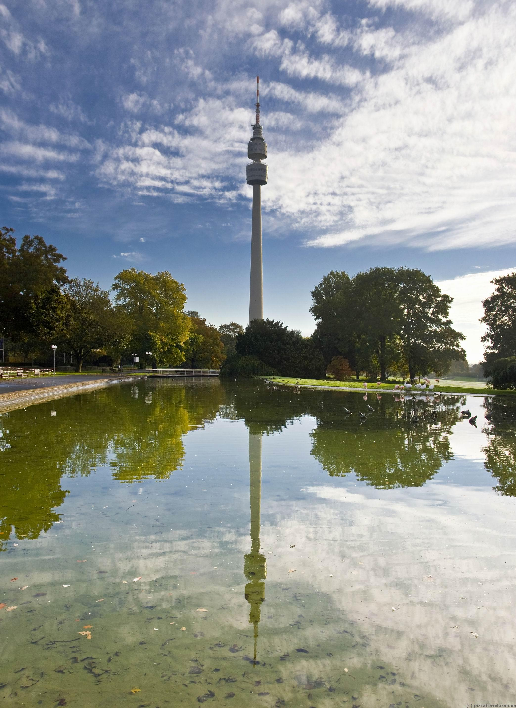
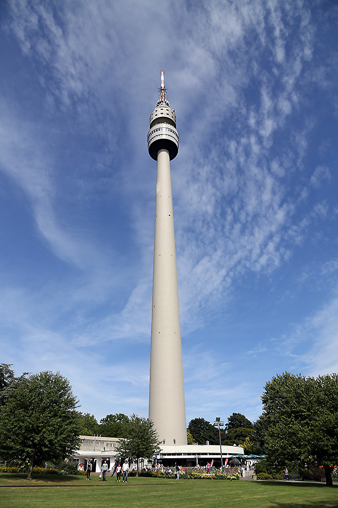

TOP TOURIST SPOT IN GERMANY
BERLIN GERMANY
Reichstag & glass dome
When the decision was made to move the Federal Government to Berlin, it was time to reawaken the Reichstag building from its long years of slumber on the Mauerstreifen, the military zone between the two sides of the Wall. The building has since been completely modernised, and today's visitors to the Reichstag can look out from the building's glass dome to get a bird's eye view of the hustle and bustle in the city. There are also a number of government buildings in the vicinity of the Reichstag, for example the Bundeskanzleramt (Federal Chancellery) and the Brandenburg Gate.

Brandenburg Gate
Without a doubt, the Brandenburg Gate is Berlin's signature attraction. Built in 1791, it was just one of many old city gates around the city of Berlin which, at that time, was still a manageable size. The decorative Pariser Platz was laid at the foot of the gate and is now home to many of the city's important buildings, for example, the Hotel Adlon with its wealth of history and the Akademie der Künste (Academy of the Arts).

Charlottenburg Palace
The magnificent Charlottenburg Palace is located just out of the centre of the city. The beautiful palace hosts fine collections of china and paintings and is situated in the middle of a picturesque palace garden right next to the river Spree. If you don't fancy a walk in the park, you can feed your mind instead in the Charlottenburg museums located directly opposite. Make sure to go on a stroll through the extensive park after visiting this very royal Berlin attraction.

HANNOVER GERMANY
Berggarten Botanic Gardens
While located within the grounds of Herrenhausen Gardens, there's enough to see in the beautiful Berggarten (translated as "Mountain Garden") to warrant a visit of its own. Able to trace its roots all the way back to the early 17th century when it was established as a kitchen and herb garden, this popular botanical garden is open year-round and is a must-visit whether you consider yourself a plant lover or not. You'll find a mix of outdoor and indoor plants here.

Herrenhausen Gardens
Hanover's magnificent royal gardens, Herrenhausen Gardens (Herrenhäuser Gärten) is really a number of great attractions in one. It encompasses both the Welfengarten and Georgengarten, two beautiful English-style parks, and the Berggarten, a botanic garden featuring orchid, palm, and cactus houses.

New Town Hall's Tower
In Hanover's Trammplatz stands the majestic New Town Hall (Neues Rathaus). Built between 1901-13 in the style of the Wilhelmine period, this palace-like structure is sometimes also referred to as the New City Hall. It's one of Hanover's most interesting structures as it's built entirely on a foundation of 6,026 beech piles and crowned with a domed tower, which stands almost 98 meters high and dominates the city's skyline.

DORTMUND GERMANY
German Football Museum
When it was decided that the profits from Germany’s 2006 World Cup would be reinvested in a football museum, North Rhine-Westphalia was the obvious choice for the location.
There’s a high concentration of well-supported football teams in this part of the country, and Dortmund was eventually picked for host city.
The museum opened in 2015 and is about domestic German football and the “Mannschaft”, the German national team.
You can read up on stars like Franz Beckenbauer and relive historic matches like the 1954 World Cup Final in Bern.
The World Cup and European Championship trophies are on show, along with all kinds of memorabilia, interactive exhibits and quizzes.
The museum finishes with a small indoor pitch for a friendly kick around.

Westfalenpark
Under the constant gaze of the Florianturm on the south side of Dortmund, the Westfalenpark is a paid-entry 70-hectare green space with a multitude of little attractions to keep you engaged a whole afternoon.
The horticultural areas deserve a detour: The Deutsches Rosarium has 3,000 different rose varieties, but also stages annual events like the electronic Juicy Beats festival in summer and the Lichterfest (Festival of Lights) in winter.
Another summer attraction is the chair lift, which opened in 1959 and runs on Sundays between a “Mountain” and “Valley” station 500 metres apart.
There’s also a miniature railway, a bird enclosure with flamingos and a pond where you can hire a rowboat

Florianturm
The entrance to Dortmund’s television tower is on the north side of the Westfalenpark.
It costs €2.50 to catch the lift to the observation deck, in addition to the €1.50 to enter the park.
At just under 220 metres, the Florianturm is the 14th highest structure in Germany and for a brief time after it was completed in 1959 it was the tallest television tower.
The elevator whizzes you to the two observation decks at 140 metres in no time at all.
There’s no orientation board to point out the landmarks far below, but you can use a map on your phone as a substitute.
Below the lower deck is a revolving restaurant if you’d like to pause over the view for a while longer.

BACK